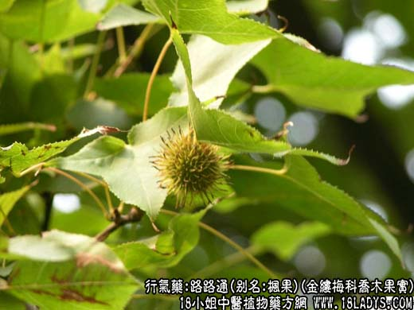
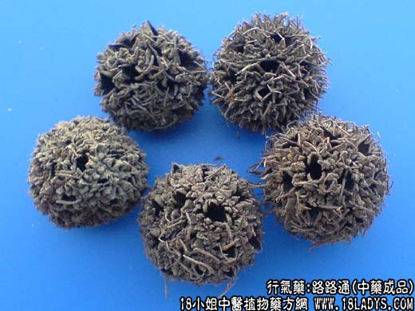

【中药概述】
路路通，别名：枫实、枫果、枫木上球、枫香果、枫莍子、九空子、狼目、狼眼、枫树球，为金缕梅科乔木植物枫香的果实。苦、平。归肝、胃经。
1．行气止痛：用于肢体痹痛，胃痛，手足拘挛等，可与当归，川芎，独活，桑寄生等同用。
2．活血通络：用于风湿痹痛，月经不调，量少而腹胀者，可与香附，茺蔚子等配伍。
3．利水消肿：用于水肿，胀满，痈肿。疥癣湿疹等。
4．通下乳汁：用于产后乳汁不下，可与穿山甲，王不留行等同用。
【药物形态】
本品为聚花果，由多数小蒴果集合而成，呈球形，直径2～3cm。基部有总果梗。表面灰棕色或棕褐色，有多数尖刺和喙状小钝刺，长0.5～1mm，常折断，小蒴果顶部开裂，呈蜂窝状小孔。体轻，质硬，不易破开。气微，味淡。
【药效鉴别】路路通疏肝理气，又兼能活血通络，尤可用于胃痛日久有瘀者。
【化学成分】含桂皮酸、左旋龙脑、树脂及挥发油等。
【用量用法】5——10g，水煎服，或入剂。
本文解释权归介绍中草药名称的中药大全所有，本文地址：https://www.daquan.com/post/1979.html